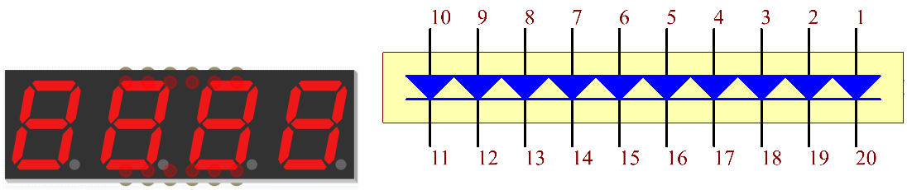

Nota
¡Hola! Bienvenido a la comunidad de entusiastas de SunFounder Raspberry Pi, Arduino y ESP32 en Facebook. Sumérgete en el mundo de Raspberry Pi, Arduino y ESP32 junto a otros apasionados.
¿Por qué unirse?
Soporte experto: Resuelve problemas posventa y desafíos técnicos con la ayuda de nuestra comunidad y equipo.
Aprende y comparte: Intercambia consejos y tutoriales para mejorar tus habilidades.
Avances exclusivos: Accede de forma anticipada a anuncios de nuevos productos y adelantos.
Descuentos especiales: Disfruta de descuentos exclusivos en nuestros productos más recientes.
Promociones y sorteos festivos: Participa en sorteos y promociones de temporada.
👉 ¿Listo para explorar y crear con nosotros? Haz clic en [Aquí] y únete hoy mismo.
1.1.3 Barra de LEDs
Introducción
En este proyecto, iluminaremos secuencialmente las luces de la barra de LEDs.
Componentes

Principio
Barra de LEDs
La barra de LEDs es un conjunto de LEDs que se conecta a un circuito electrónico o microcontrolador. Es similar a conectar 10 LEDs individuales a 10 pines de salida. Generalmente, se puede utilizar como indicador de nivel de batería, en equipos de audio y en paneles de control industrial, entre otras aplicaciones.
Diagrama Esquemático
T-Board Name |
physical |
wiringPi |
BCM |
GPIO17 |
Pin 11 |
0 |
17 |
GPIO18 |
Pin 12 |
1 |
18 |
GPIO27 |
Pin 13 |
2 |
27 |
GPIO22 |
Pin 15 |
3 |
22 |
GPIO23 |
Pin 16 |
4 |
23 |
GPIO24 |
Pin 18 |
5 |
24 |
GPIO25 |
Pin 22 |
6 |
25 |
SDA1 |
Pin 3 |
8 |
2 |
SCL1 |
Pin 5 |
9 |
3 |
SPICE0 |
Pin 24 |
10 |
8 |
Procedimientos Experimentales
Paso 1: Construye el circuito.

Para Usuarios de Lenguaje C
Paso 2: Ve a la carpeta del código.
cd ~/davinci-kit-for-raspberry-pi/c/1.1.3/
Paso 3: Compila el código.
gcc 1.1.3_LedBarGraph.c -lwiringPi
Paso 4: Ejecuta el archivo compilado.
sudo ./a.out
Después de ejecutar el código, verás cómo los LEDs de la barra se encienden y apagan de forma regular.
Nota
Si el código no funciona después de ejecutarlo, o aparece un mensaje de error como "wiringPi.h: No such file or directory", consulta c code is not working?.
Código
#include <wiringPi.h>
#include <stdio.h>
int pins[10] = {0,1,2,3,4,5,6,8,9,10};
void oddLedBarGraph(void){
for(int i=0;i<5;i++){
int j=i*2;
digitalWrite(pins[j],HIGH);
delay(300);
digitalWrite(pins[j],LOW);
}
}
void evenLedBarGraph(void){
for(int i=0;i<5;i++){
int j=i*2+1;
digitalWrite(pins[j],HIGH);
delay(300);
digitalWrite(pins[j],LOW);
}
}
void allLedBarGraph(void){
for(int i=0;i<10;i++){
digitalWrite(pins[i],HIGH);
delay(300);
digitalWrite(pins[i],LOW);
}
}
int main(void)
{
if(wiringPiSetup() == -1){ //si la inicialización de wiring falla, imprime mensaje en pantalla
printf("setup wiringPi failed !");
return 1;
}
for(int i=0;i<10;i++){ //configura los pines de LED en modo salida
pinMode(pins[i], OUTPUT);
digitalWrite(pins[i],LOW);
}
while(1){
oddLedBarGraph();
delay(300);
evenLedBarGraph();
delay(300);
allLedBarGraph();
delay(300);
}
return 0;
}
Explicación del Código
int pins[10] = {0,1,2,3,4,5,6,8,9,10};
Crea un arreglo y asígnale los números de los pines correspondientes a la barra de LEDs (0,1,2,3,4,5,6,8,9,10). Este arreglo se utilizará para controlar los LEDs.
void oddLedBarGraph(void){
for(int i=0;i<5;i++){
int j=i*2;
digitalWrite(pins[j],HIGH);
delay(300);
digitalWrite(pins[j],LOW);
}
}
Enciende los LEDs en las posiciones impares de la barra de LEDs uno por uno.
void evenLedBarGraph(void){
for(int i=0;i<5;i++){
int j=i*2+1;
digitalWrite(pins[j],HIGH);
delay(300);
digitalWrite(pins[j],LOW);
}
}
Enciende los LEDs en las posiciones pares de la barra de LEDs uno por uno.
void allLedBarGraph(void){
for(int i=0;i<10;i++){
digitalWrite(pins[i],HIGH);
delay(300);
digitalWrite(pins[i],LOW);
}
}
Enciende los LEDs de la barra de LEDs uno a uno.
Para Usuarios de Lenguaje Python
Paso 2: Dirígete a la carpeta del código.
cd ~/davinci-kit-for-raspberry-pi/python/
Paso 3: Ejecuta el archivo.
sudo python3 1.1.3_LedBarGraph.py
Después de ejecutar el código, verás que los LEDs en la barra se encienden y apagan regularmente.
Código
Nota
Puedes Modificar/Restablecer/Copiar/Ejecutar/Detener el código a continuación. Antes de eso, asegúrate de estar en la ruta de código fuente, como davinci-kit-for-raspberry-pi/python.
import RPi.GPIO as GPIO
import time
ledPins = [11, 12, 13, 15, 16, 18, 22, 3, 5, 24]
def oddLedBarGraph():
for i in range(5):
j = i*2
GPIO.output(ledPins[j],GPIO.HIGH)
time.sleep(0.3)
GPIO.output(ledPins[j],GPIO.LOW)
def evenLedBarGraph():
for i in range(5):
j = i*2+1
GPIO.output(ledPins[j],GPIO.HIGH)
time.sleep(0.3)
GPIO.output(ledPins[j],GPIO.LOW)
def allLedBarGraph():
for i in ledPins:
GPIO.output(i,GPIO.HIGH)
time.sleep(0.3)
GPIO.output(i,GPIO.LOW)
def setup():
GPIO.setwarnings(False)
GPIO.setmode(GPIO.BOARD) # Numeración física de pines GPIO
for i in ledPins:
GPIO.setup(i, GPIO.OUT) # Configura todos los pines de ledPins como salida
GPIO.output(i, GPIO.LOW) # Configura todos los pines de ledPins en bajo (+3.3V) para apagar el LED
def loop():
while True:
oddLedBarGraph()
time.sleep(0.3)
evenLedBarGraph()
time.sleep(0.3)
allLedBarGraph()
time.sleep(0.3)
def destroy():
for pin in ledPins:
GPIO.output(pin, GPIO.LOW) # Apaga todos los LEDs
GPIO.cleanup() # Libera los recursos
if __name__ == '__main__': # Inicio del programa
setup()
try:
loop()
except KeyboardInterrupt: # Cuando se presiona 'Ctrl+C', se ejecuta destroy()
destroy()
Explicación del Código
ledPins = [11, 12, 13, 15, 16, 18, 22, 3, 5, 24] Crea un arreglo y asígnale los números de los pines correspondientes a la barra de LEDs (11, 12, 13, 15, 16, 18, 22, 3, 5, 24). Este arreglo se utilizará para controlar los LEDs.
def oddLedBarGraph():
for i in range(5):
j = i*2
GPIO.output(ledPins[j],GPIO.HIGH)
time.sleep(0.3)
GPIO.output(ledPins[j],GPIO.LOW)
Enciende los LEDs en las posiciones impares de la barra de LEDs uno por uno.
def evenLedBarGraph():
for i in range(5):
j = i*2+1
GPIO.output(ledPins[j],GPIO.HIGH)
time.sleep(0.3)
GPIO.output(ledPins[j],GPIO.LOW)
Enciende los LEDs en las posiciones pares de la barra de LEDs uno por uno.
def allLedBarGraph():
for i in ledPins:
GPIO.output(i,GPIO.HIGH)
time.sleep(0.3)
GPIO.output(i,GPIO.LOW)
Enciende los LEDs de la barra de LEDs uno a uno.